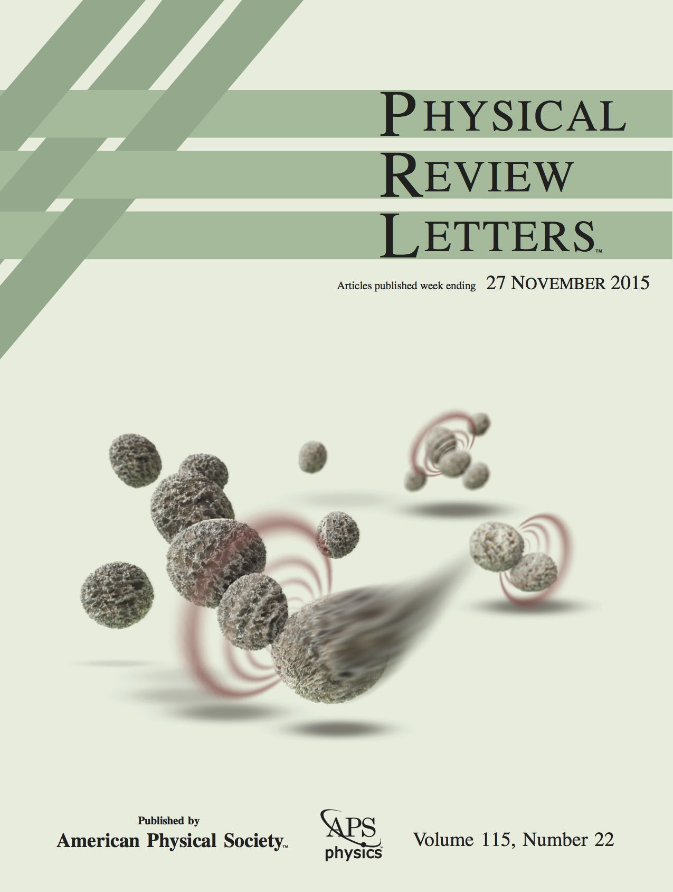
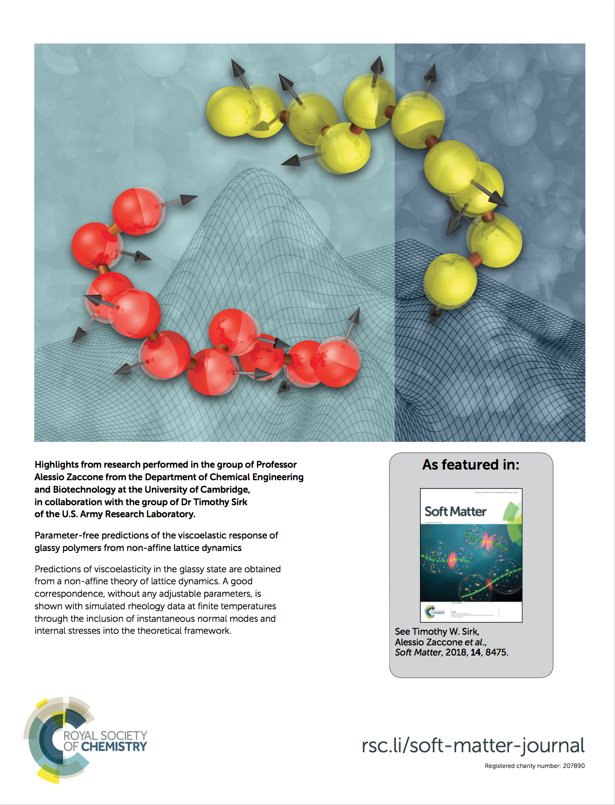
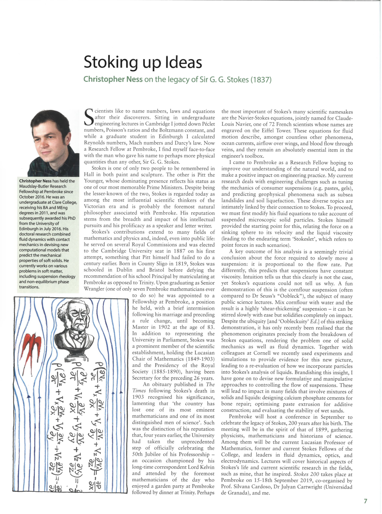
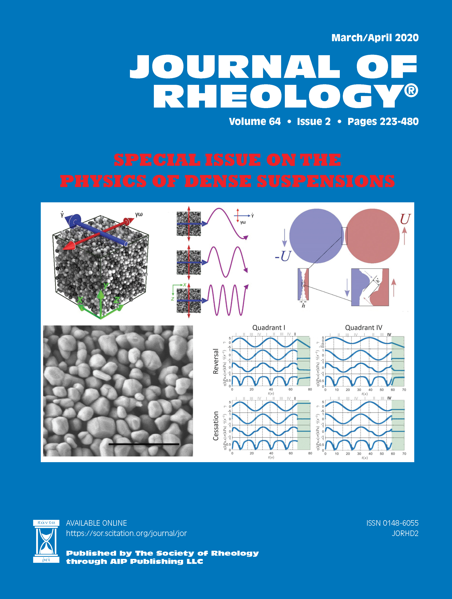
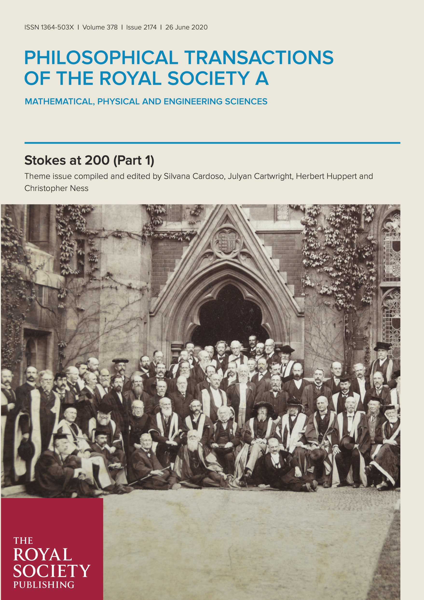
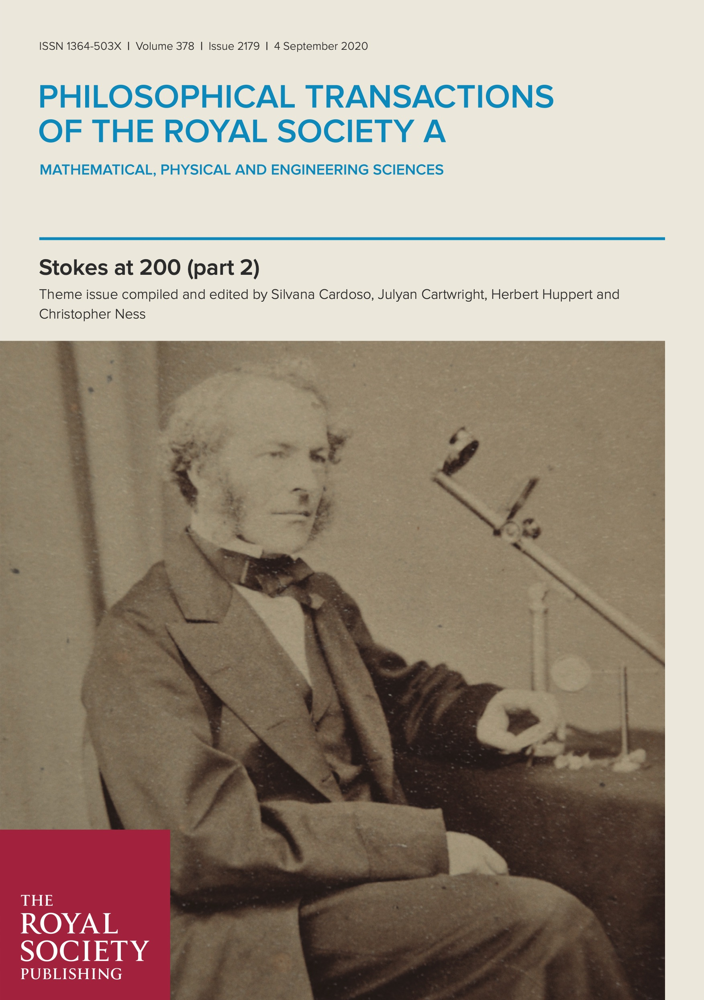

PUBLICATION LIST






go back
2022
[38] Impact of granular inclusions on the phase behaviour of colloidal gels
Y. Li, J.R. Royer, J. Sun and C. Ness, arXiv 2207.03864 (2022)
[37] Viscosity metamaterials
P. Sehgal, M. Ramaswamy, E.Y.X. Ong, C. Ness, I. Cohen and B.J. Kirby, arXiv 2206.01141 (2022)
[36] Shear thickening in dense suspensions driven by particle interlocking
M. Blair and C. Ness, Journal of Fluid Mechanics 948:A48 1-15 (2022)
[35] The physics of dense suspensions
C. Ness, R. Seto and R. Mari, Annual Review of Condensed Matter Physics 13:97-117 (2022)
2021
[34] Bulk rheology of sticky DNA-functionalized emulsions
I. D. Stoev, A. Caciagli, A. Mukhopadhyay, C. Ness and E. Eiser, Physical Review E 104:054602 (2021)
[33] Simulating dense non-Brownian suspension rheology using LAMMPS
C. Ness, arXiv 2108.04606 (2021)
[32] Application of hydrodynamic lubrication in discrete element method (DEM) simulations of wet bead milling chambers
R. Cabiscol, T. Jansen, M. Marigo and C. Ness, Powder Technology 384:542-553 (2021)
2020
[31] Modelling the microstructure and stress in dense suspensions under inhomogeneous flow
J.J.J. Gillissen and C. Ness, Physical Review Letters 125:184503 (2020)
[Editors' Suggestion]
[30] Stokes at 200 (Part 2)
S.S.S. Cardoso. J.E. Cartwright, H.E. Huppert and C. Ness, Philosophical Transactions of the Royal Society A 378:20200160 (2020)
[29] Nonequilibrium master kinetic equation modelling of colloidal gelation
J. Cornelis, P. Schall, C. Ness, T. Blijdenstein and A. Zaccone, Physical Review E 102:022602 (2020)
[28] Nonequilibrium continuous phase transition in colloidal gelation with short-range attraction
J. Cornelis, C. Ness, S. Simeonov, A. Zaccone and P. Schall, Nature Communications 11:3558 (2020)
[27] Shear thickening and jamming of dense suspensions: the roll of friction
A. Singh, C. Ness, R. Seto, J. de Pablo and H. Jaeger, Physical Review Letters 124:248005 (2020)
[26] Stokes at 200: A celebration of the remarkable achievements of Sir George Gabriel Stokes two hundred years after his birth
S.S.S. Cardoso. J.E. Cartwright, H.E. Huppert and C. Ness, Philosophical Transactions of the Royal Society A 378:20190505 (2020)
[25] Tunable solidification of cornstarch under impact: how to make someone walking on cornstarch sink
R. Niu, M. Ramaswamy, C. Ness, A. Shetty and I. Cohen, Science Advances 6(19):eaay6661 (2020)
[24] Constitutive model for shear-thickening suspensions: Predictions for steady shear with superposed transverse oscillations
J.J.J. Gillissen, C. Ness, J. D. Peterson, H.J. Wilson and M.E. Cates, Journal of Rheology 64(2):353-365 (2020)
[Cover article]
[23] Absorbing-state transitions in granular materials close to jamming
C. Ness and M.E. Cates, Physical Review Letters 124:088004 (2020)
[22] On the role of flexibility in linker-mediated DNA hydrogels
I.D. Stoev, T. Cao, A. Caciagli, J. Yu, C. Ness, R. Liu, R. Ghosh, T. O'Neill, D. Liu and E. Eiser, Soft Matter 16:990-1001 (2020)
[21] Testing the Wyart-Cates model for non-Brownian shear thickening using bidisperse suspensions
B.M.Guy, C. Ness, M. Hermes, L.J. Sawiak, J. Sun and W.C.K. Poon, Soft Matter 16:229-237 (2020)
2019
[20] Constitutive model for time-dependent flows of shear-thickening suspensions
J.J.J. Gillissen, C. Ness, J. D. Peterson, H.J. Wilson and M.E. Cates, Physical Review Letters 123:214504 (2019)
[19] Stoking up Ideas
C. Ness, The Martlet (2019)
[18] Structural and linear elastic properties of DNA hydrogels by coarse-grained simulation
Z. Xing, C. Ness, D. Frenkel and E. Eiser, Macromolecules 52(2):504-512 (2019)
2018
[17] Parameter-free predictions of the viscoelastic response of glassy polymers from nonaffine lattice dynamics
V.V. Palyulin, C. Ness, R. Milkus, R.M. Elder, T. Sirk and A. Zaccone, Soft Matter 14:8475-8482 (2018)
[Cover article]
[16] A bootstrap mechanism for non-colloidal suspension viscosity
R.I. Tanner, C. Ness, A. Mahmud, S. Dai and J. Moon, Rheologica Acta 57(10):635-643 (2018)
[15] Shaken and stirred: Random organization reduces viscosity and dissipation in granular suspensions
C. Ness, R. Mari and M.E. Cates, Science Advances 4(3):eaar3296 (2018)
[14] Interpretation of the Vibrational Spectra of Glassy Polymers Using Coarse-Grained Simulations
R. Milkus, C. Ness, V.V. Palyulin, J. Weber, A. Lapkin and A. Zaccone, Macromolecules 51(4):1559-1572 (2018)
[13] Rheology of dense granular suspensions under extensional flow
O. Cheal and C. Ness, Journal of Rheology 62(2):501-512 (2018)
[12] Linking attractive interactions and confinement to the rheological response of suspended particles close to jamming
M.A. Jones and C. Ness, Granular Matter 20:3 (2018)
2017
[11] How Confinement-Induced Structures Alter the Contribution of Hydrodynamic and Short-Ranged Repulsion Forces to the Viscosity of Colloidal Suspensions
M. Ramaswamy, N.Y.C. Lin, B.D. Leahy, C. Ness, A.M. Fiore, J.W. Swan and I. Cohen, Physical Review X 7:041005 (2017)
[10] Nonmonotonic dependence of polymer-glass mechanical response on chain bending stiffness
C. Ness, V.V. Palyulin, R. Milkus, R. Elder, T. Sirk and A. Zaccone, Physical Review E 96:030501(R) (2017)
[9] Linking particle properties to dense suspension extrusion flow characteristics using discrete element simulations
C. Ness, J.Y. Ooi, J. Sun, M. Marigo, P. McGuire, H. Xu and H. Stitt, AIChE Journal 63(7):3069-3082 (2017)
[Editor's Choice]
[8] Effect of Hydrodynamic Interactions on the Lifetime of Colloidal Bonds
C. Ness and A. Zaccone, Industrial and Engineering Chemistry Research 56(13):3726-2732 (2017)
[7] Oscillatory rheology of dense, athermal suspensions of nearly hard spheres below the jamming point
C. Ness, Z. Xing and E. Eiser, Soft Matter 13(19):3664-3674 (2017)
2016
[6] Tunable shear thickening in suspensions
N.Y.C. Lin, C. Ness, M.E. Cates, J. Sun and I. Cohen, Proceedings of the National Academy of Sciences 113(39):10774-10778 (2016)
[5] Two-scale evolution during shear reversal in dense suspensions
C. Ness and J. Sun, Physical Review E 93(1):012604 (2016)
[4] Shear thickening regimes of dense non-Brownian suspensions
C. Ness and J. Sun, Soft Matter 12(3):914-924 (2016)
2015
[3] Hydrodynamic and Contact Contributions to Continuous Shear Thickening in Colloidal Suspensions
N.Y.C. Lin, B.M. Guy, M. Hermes, C Ness, J. Sun, W.C.K. Poon, and I. Cohen, Physical Review Letters 115:228304 (2015)
[Editors' Suggestion, Cover article]
[2] Flow regime transitions in dense non-Brownian suspensions: Rheology, microstructural characterization, and constitutive modeling
C. Ness and J. Sun, Physical Review E 91(1):012201 (2015)
2013
[1] An improved methodology for determining threshold sooting indices from smoke point lamps
R.J. Watson, M.L. Botero, C. Ness, N.M. Morgan, M. Kraft, Fuel 111:120-130 (2013)